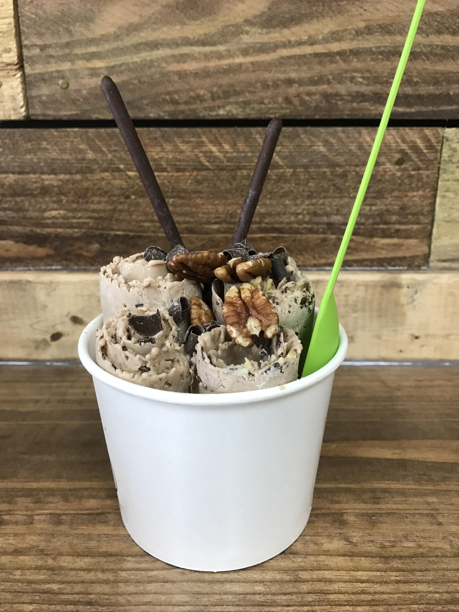

Convive Coffee Roastery
Coffee has become an American favorite in recent years, but getting coffee isn't just about the beverage itself. It's about the experience of catching up with friends over a cup of joe or geetting the caffeine boost you need to crank out a big project at work. Convive Coffee Roastery provides you with both.
Owners Ryland and Katie Weber opened their first Convive cafe in McCandless Crossing, about twenty minutes north of Pittsburgh, in 2016 and just recently opened a second location in Pittsburgh's Lawrenceville neighborhood. A third location will open soon in Mars, PA.
The cafe puts a big emphasis on community, hence their name Convive which means to eat and drink together. No better place is this sense of community demonstrated than the Pay-It-Forward-Wall where customers can buy a drink for someone else and then pin a coffee sleeve detailing who the drink is for to the wall. If you fit the description on one of the sleeves, bring it to the cash register and enjoy a free drink on your kind neighbor.
Convive's menu includes, espresso drinks, iced coffees, loose leaf teas, hot chocolate, and a few pasteries such as cranberry walnut scones and blueberry muffins. Mmm Mmm!
Naturoll Creamery

NatuRoll Creamery is Pittsburgh's first rolled ice cream store.
An ice cream technique that originated in Thailand, rolled ice cream involves spreading the liquid batter and toppings on a cold plate while it freezes then rolling the batter into 5-6 ice cream rolls that are arranged in a cup and topped with additional toppings.
NatuRoll has about 10-12 permanent flavor combination such as Cookie Monster (oreo and chocolate) and Sweet and Salty (salted carmel and pretzel) and 4 monthly flavors, but customers can also customize their own creation by choosing their ice cream base and two toppings.
Cyndie Delucia, the founder of NatuRoll Creamery, opened her first store in Lawrenceville in 2016 and has since opened two more locations in the surrouding area.